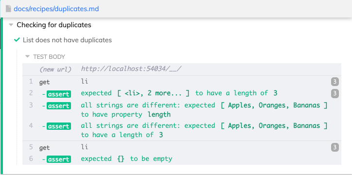
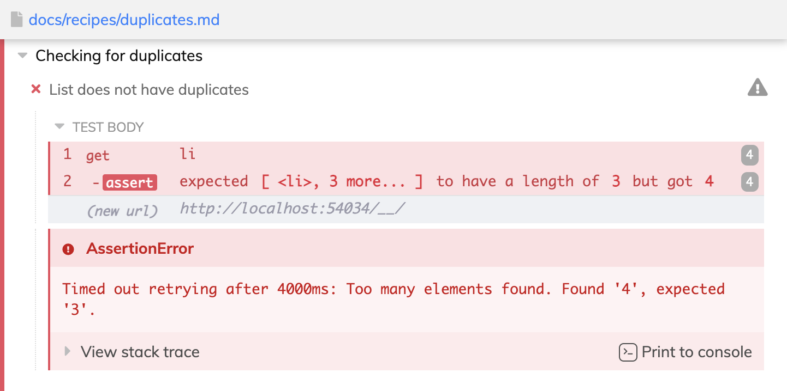
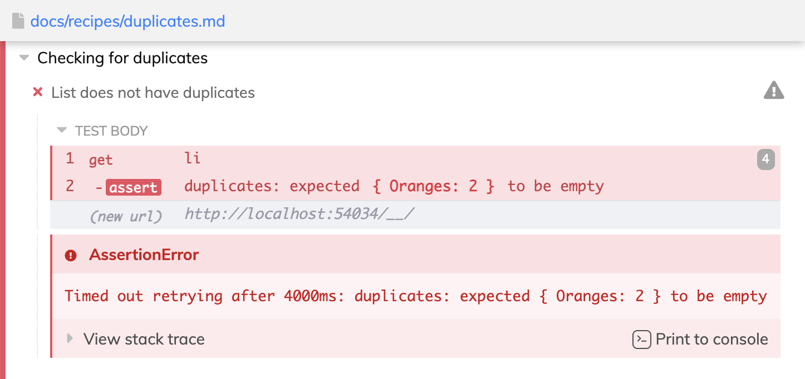
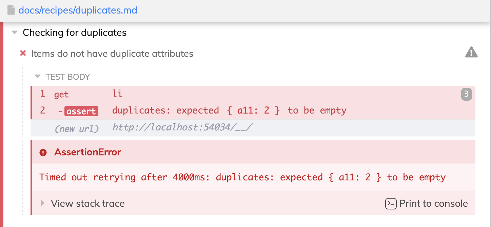
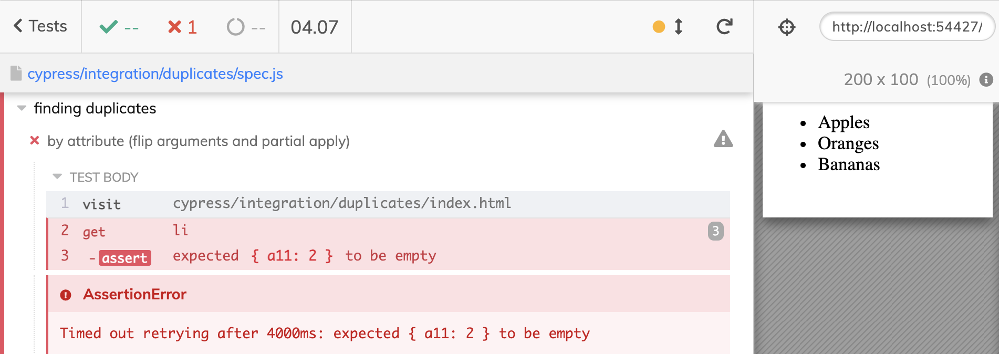

In my previous blog post Functional Helpers For Cypress Tests I have shown how to test if a table is sorted. In this blog post I will show how to check a list of items on the page to detect any duplicates. You can find the shown source code in the repos bahmutov/cypress-examples and bahmutov/cypress-should-really.
Check duplicate text
Let's say we have a list of items and want to confirm there are no duplicates. We need to grab the desired elements, get the text from each one, then check the array of strings for duplicates. You can find this example in the cypress-examples recipes.
1 | <!-- items without duplicates --> |
For better retry-ability we should write all steps inside a should(callback) function.
1 | cy.get('li') |

Tip: destructure the Cypress._ object to get the map and uniq functions for more concise test code
1 | // destructure Cypress._ for convenience |
Since map and uniq are so short, we can skip the intermediate variable and compose the calls
1 | const { map, uniq } = Cypress._ |
Report duplicates
The code above works, but it shows a very confusing and unhelpful error if there are duplicates.
1 | <ul> |

The error should specifically report which items are duplicates. So we can process the items slightly differently and count the number of times each item is seen using _.countBy function. Then we can pick just the items with the count larger than one using _.pickBy function.
1 | // destructure Cypress._ for convenience |
The above test reports the duplicates nicely

This is a good error.
Detecting duplicate attributes
What if instead of the element text, we want to detect duplicate attributes? We first need to call Element.getAttribute but then the rest stays the same.
1 | <ul> |
Notice the duplicate product id "a11". Let's make sure we find it.
1 | // destructure Cypress._ for convenience |

Using functional helpers
The code above works pretty well, but you might write it a little bit more concise using functional helpers from cypress-should-really if that is your thing. Our assertion callback function makes the following steps passing the result from each step to the next one.
- maps each element to the attribute by calling
getAttributemethod with "data-product-id" argument- this can be done using
map(invoke('getAttribute', 'data-product-id'))code
- this can be done using
- counts the number of times each value is present in the array using
_.countByfunction- we can keep this step as is
- from the count object, picks properties with value greater than one
- we can use the function
(counts) => pickBy(counts, greaterThan(1))to achieve this
- we can use the function
The entire pipeline using cypress-should-really helpers and Cypress._ functions is below.
1 | import { |
Notice the (counts) => pickBy(counts, greaterThan(1)) step. The Lodash function pickBy expects the object as the first argument. The object is not yet known, it will be computed in the previous step. The second argument is a function greaterThan(1), which is known. If the expected order of arguments could be reversed and curried, we could partially apply the callback right away like pickBy(greaterThan(1)). But the order is reversed, which makes us write a function just to pass the first argument.
We could write our own function helper pickBy, but here is another possible solution. We can flip the order of arguments using functional helper flipTwoArguments available in cypress-should-really. For example:
1 | const {flipTwoArguments} = require('cypress-should-really') |
The function pickByFn works great, we just need to apply the first known argument so it only waits for the counts object to be provided. We can apply the first argument using the partial helper
1 | const {flipTwoArguments, partial, greaterThan} = require('cypress-should-really') |
Now that we got our "pick" function sorted out, we can write the callback function in a single shot.
1 | it('by attribute (flip arguments and partial apply)', () => { |

ü§™ If Stephen Curry wrote the above function, he would get free points for it. Of course, being a Curry, he would not even need to use the partial helper...
Note: this blog post was mentioned in the Cypress Advent Calendar 2021 Day 18